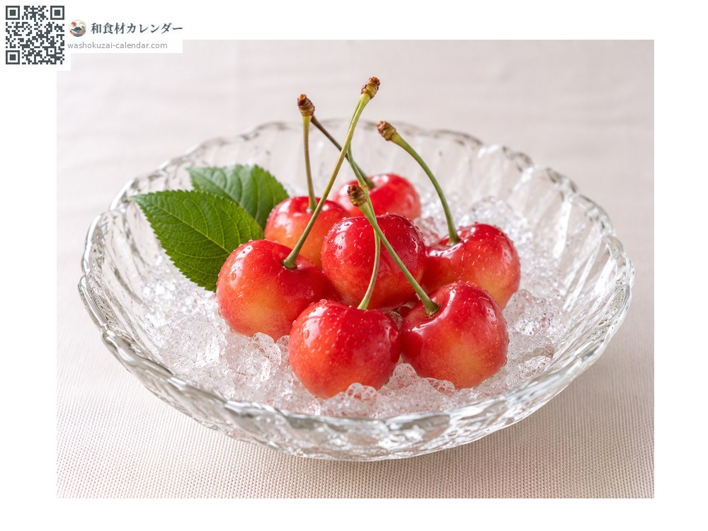
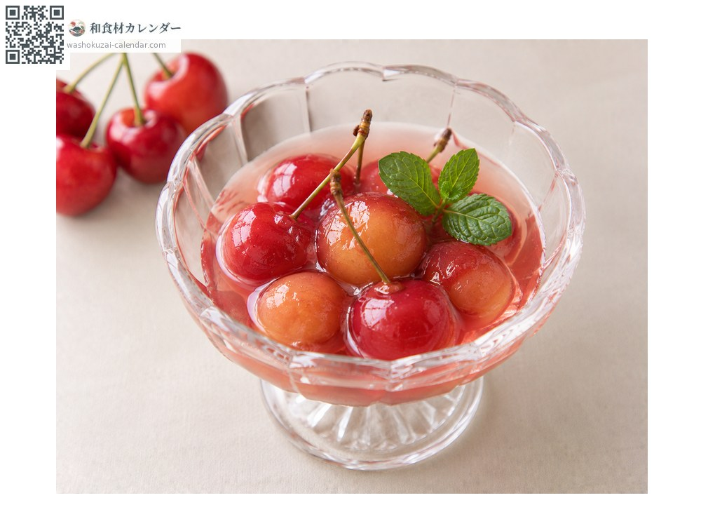
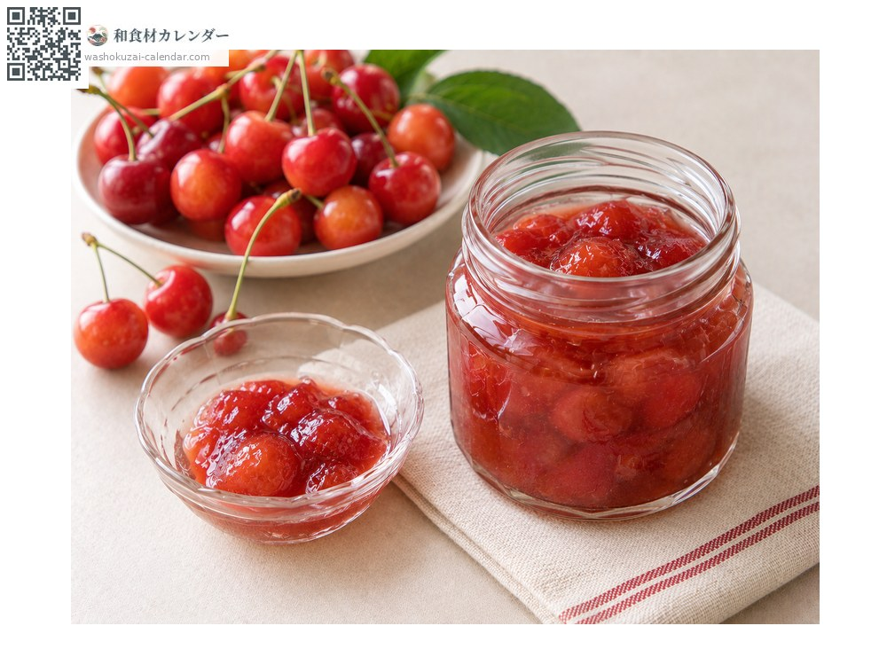
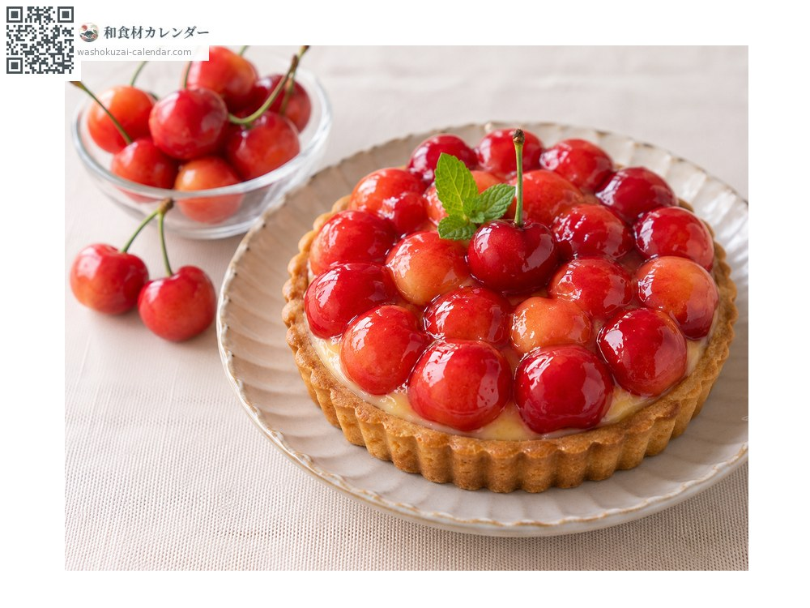

果物
サクランボ
さくらんぼ
別名・別表記桜桃、佐藤錦、sakuranbo
旬は6月・7月

旬の時期
1月
2月
3月
4月
5月
6月
7月
8月
9月
10月
11月
12月
旬出回り
調理法

そのまま
冷やしすぎない。

コンポート
シロップで煮る。

ジャム
種を取って煮詰める。

タルト
洋菓子に。
選び方
軸が緑で太く、実に張りとつやがあるもの。色が濃いほど完熟。
保存方法
冷やしすぎると味が落ちる。食べる直前に冷やす。日持ちしないので2〜3日で。
主な産地
豆知識
山形が全国生産の大半を占める。佐藤錦は佐藤栄助が育成した品種で、名前はその人名に由来する。